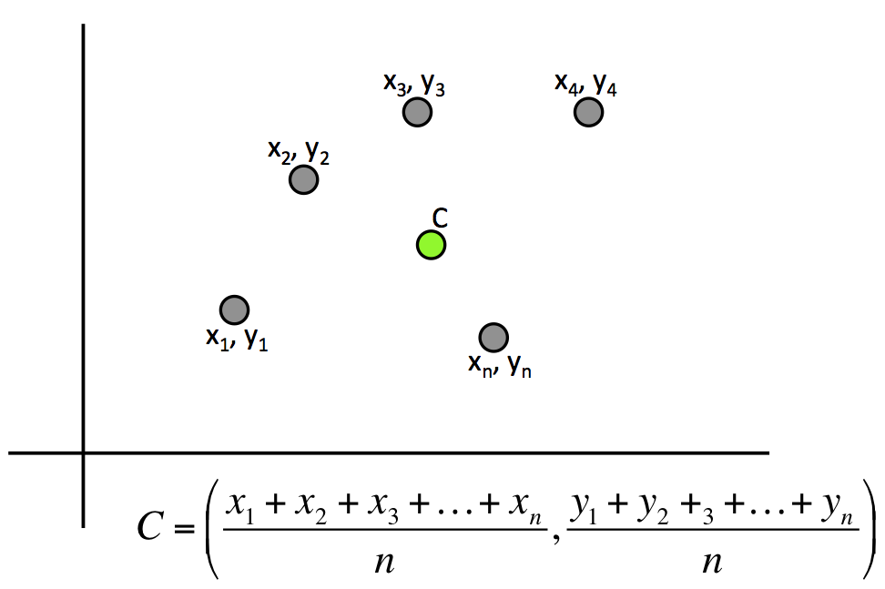
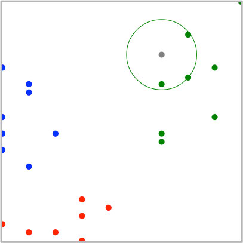

Machine Learning
K-Nearest Neighbors

Distance Between Two Points

Active Learning
Calculate distance between two points ...
Centroid
Active Learning
Calculate centroid ...
K-Nearest Neighbors

K-Nearest Neighbors Sample
K-Nearest Neighbors Algorithm
- Graph training data
- Calculate distance between new point
and every other point - Select closest k points
- Vote, select the majority of the
k closest points.
Distance Between Two Points